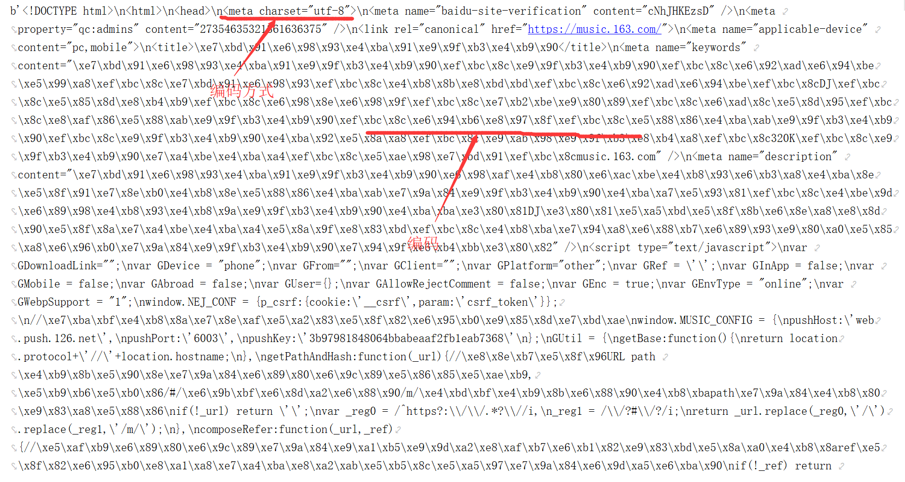
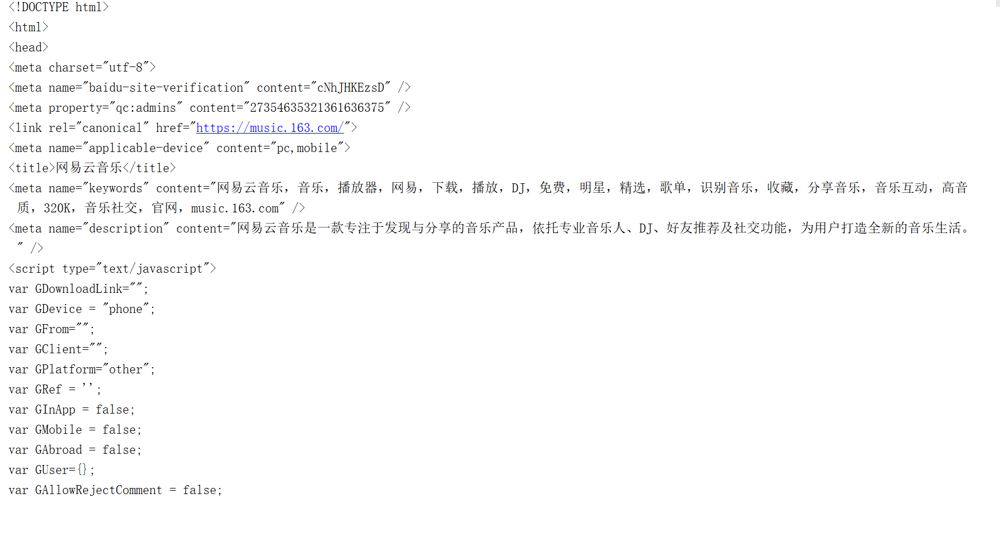

近期老师教了Python爬虫的一些知识，在此总结复习一下，同时如果你对爬虫也感兴趣，可以将这篇文章作为参考。
Python版本3.7.0b2(基于Anaconda的Python编译器)
IDE用的是PyCharm 2017.3.3
Win10系统
爬虫概述
爬虫是什么?
网络爬虫（又被称为网页蜘蛛，网络机器人，在FOAF社区中间，更经常的称为网页追逐者），是一种按照一定的规则，自动地抓取万维网信息的程序或者脚本。另外一些不常使用的名字还有蚂蚁、自动索引、模拟程序或者蠕虫。(来自百度百科)
信息是怎样获取的?
浏览器所显示的网页信息，都是由Html、CSS和JavaScript构成的。它们通过浏览器解析后就成为了我们所看到的网页。因此想要获取网页上的信息，我们使用爬虫过滤Html代码，然后将我们需要的内柔提取出来，这样就能获取信息了。
爬虫基础知识
网页构成介绍
- URL（Uniform Resource Locator），统一资源定位符，就是我们常说的网址。用来表示从因特网上得到的资源位置和访问这些资源的方法。具体的内容我会在以后的计算机网络总结中详细讲解。
- HTML（HyperText Markup Language），超文本标记语言，网页的本质。
- CSS（Cascading Style Sheets），层叠样式表，用来更改HTML或者XML的表现形式。
- JS（JavaScript），浏览器脚本语言，用来给HTML增加动态效果。
一般情况下，我们从HTML里就可以得到想要的信息了，但有的时候一些信息会被隐藏到JS里，因此我们可能还需要抓包。因为我还没有遇到需要Cookie和抓包的情况，因此本文先不做介绍，以后遇到后再做补充。
再粗略的介绍一下HTML
HTML中最基本单位是标签就是两个尖括号里的东西<xxx> <\xxx>，他们是成对出现(除了图片标签img等少数标签外)。而这些标签中间的内容就是我们页面上看到的文字。
一般我们所需要爬取的数据也就是这些标签中间的内容。
编码
编码是信息从一种形式或格式转换为另一种形式的过程也称为计算机编程语言的代码简称编码。用预先规定的方法将文字、数字或其它对象编成数码，或将信息、数据转换成规定的电脉冲信号。编码在电子计算机、电视、遥控和通讯等方面广泛使用。编码是信息从一种形式或格式转换为另一种形式的过程。解码，是编码的逆过程。(来自百度百科)
我们常用的编码格式有ASCII、UTF-8、GB 2312和GBK等等。
从网页上爬取的数据需要通过解码才能翻译成我们所看到的汉字。
爬虫所需要的了解的内容
- Python基础语法
- urllib库的用法
- re库的用法
- chardt库的用法
urllib库的基本用法
urllib是Python语言内置的用于处理网络请求的库，使用最多的模块，涉及请求、响应、浏览器模拟、代理、cookie等功能。
urllib内置的常用模块：
urllib.request： 请求模块，用来打开和读取URLs的
urllib.error：处理urllib.request请求过程中,出现的异常，可以使用try进行捕捉处理
urllib.request
常用函数
urlopen
urlopen(url, data=None, timeout=socket._GLOBAL_DEFAULT_TIMEOUT)
url：必须参数，需要爬取的网站地址。
data：一般get方法不需要设置，如果post方法需要设置为post。
timeout：请求设置超时时间，防止请求阻塞一直等待，一般使用默认值就可以。
使用urlopen函数返回http.client.HTTPResponse对象，再使用read()函数可以解析为二进制文件。
1 | from urllib.request import urlopen |

这时候在用decode()函数解码就可以看到中文了。
1 | from urllib.request import urlopen |

对于网站的编码，每次我们这样人工查找在爬取很多页面的时候极不方便，下面介绍chardet库中的detect函数
chardet.detect(response.read())
会返回一个字典
1 | from urllib.request import urlopen |
这时我们只要获取encoding的键值就可以拿到编码方式，不需要人工获取了。
urlretrieve
urlretrieve用来将网页信息直接下载到本地。可以直接下载音乐、网址和图片等
urlretrieve(url, filename=None, reporthook=None, data=None)
url：必须参数爬取的网址。
filename：下载数据的文件名(如果下载数据保存为.mp4格式，那么它就是音乐了)
reporthook：回调函数，用来显示下载进度。
data：同urlopen函数。
1 | from urllib.request import urlretrieve |
这时在运行文件的同级目录下就会生成一个"网易云.html"的文件。
urlcleanup
urlcleanup函数是用来清理urlretrieve函数所产生的缓存。
每次使用urlretrieve后记得使用就可以了。
urllib库的高级用法
直接使用urlopen函数时，会被爬取网站的服务器鉴定为爬虫，于是就有被封禁的危险。
爬虫其实就是程序猿之间的斗智斗勇，做爬虫的人想拿走网页的数据，做网页的不想数据被拿走，于是他就会设置一些预防措施，比如加验证码，统计你一段时间内访问的次数等来判断你是人为访问还是爬虫访问。因此我们需要做一些伪装。而基本的urlopen()函数并不能不支持验证、cookie或其他HTTP高级功能。
浏览器伪装技术
如果识别有问题，那么站点根本不会响应，所以为了完全模拟浏览器的工作，我们需要设置一些Headers 的属性。(服务器通过Headers来判断是否是浏览器访问的)
下面给出火狐浏览器的报头
User-Agent: Mozilla/5.0 (Windows NT 6.1; Win64; x64; rv:59.0) Gecko/20100101 Firefox/59.0
也可以自己从网上找一些浏览器报头常见浏览器User-Agent大全
- build_opener：为urlopen函数设置访问模式
- addheaders:为访问模式添加报头
- install_opener：将访问模式设为全局访问模式
1 | import urllib.request |
URLError
urllib.error.URLError函数的使用方法类似Java里面的try-catch。
可以帮助我们调试程序。
Ip代理技术
假如你用了浏览器伪装后依然被服务器识别出来了是爬虫，那么你可能会遭到服务器的IP封禁。解决办法就是用别人的IP模拟别人登陆，这样就算被封禁也是别人的IP被封禁，你依然可以继续爽歪歪的爬虫啦.
关于IP代理大家也可以自己上网搜索，有很多免费的。这里给大家提供两个西刺代理和快代理
如何使用这些代理呢。需要使用ProxyHandler函数，下面给出一个综合实例
1 | import urllib |
Re库
Re就是使用正则表达式所需要的库。
Python中正则表达式和大多数语言中正则表达式的用法一样。
具体的使用方法就不在此赘述了，大家自由查阅有关资料就可以啦
最后给出一个综合实例，爬取豆瓣读书所有出版社信息及其在售书籍数目。
1 | #coding = utf-8 |